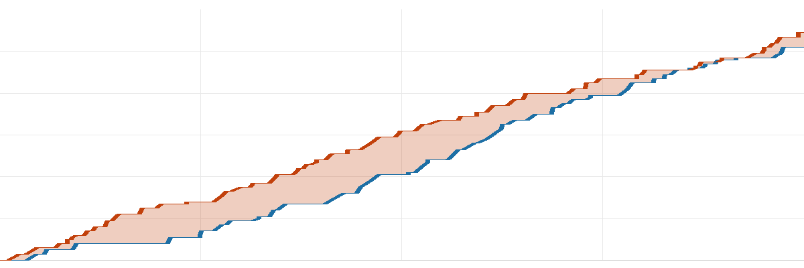
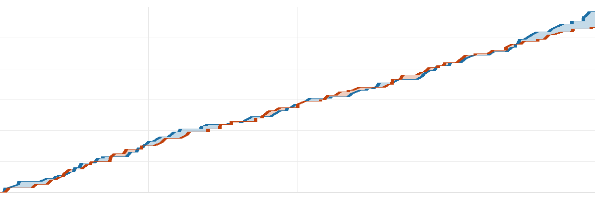
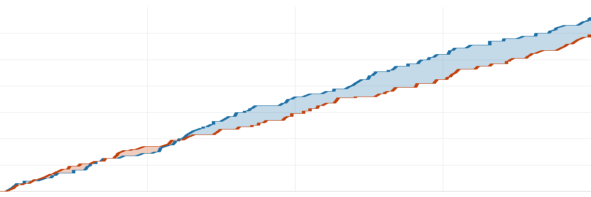

去球吧·NBA 每日战报
2026-11-04美国时间
共 14 场 ｜ 每行格式：客队 比分 : 比分 主队
今天 14 场，最狠的一刻出在热火 117-116 快船：克莱·汤普森压哨投进反超球，他们一度落后 20 分、多打一个加时。
焦点球星5 人
东契奇40分9板 7助·湖人 胜 国王
詹姆斯13分10板 8助·76人 胜 活塞
杜兰特21分5板 2助·火箭 负 森林狼
文班亚马52分24板 2助·马刺 胜 独行侠
杨瀚森0分0板 0助·开拓者 胜 太阳
推荐比赛4 场
加时绝杀今日最大逆转克莱·汤普森压哨投进反超球
| 1 | 2 | 3 | 4 | OT |
| 分节 | 33-24 | 19-43 | 26-20 | 29-20 | 10-9 |
加时赛
全场交替领先 8 次、打平 5 次，热火最后阶段才拉开 1 分。
| 热火 | 阿德巴约35分10板4助·克莱·汤普森30分5板3助·字母哥27分14板6助 |
| 快船 | 加兰26分1板7助·八村塁21分9板7助·布鲁克·洛佩兹20分8板1助 |
|
命中率 |
三分 |
篮板 |
助攻 |
失误 |
| 热火 |
43 | 25 | 50 | 35 | 12 |
| 快船 |
48 | 37 | 47 | 30 | 20 |
北京 11:30 开球 ｜ 热火 3-5 ｜ 快船 1-7
今日最佳一球
克莱·汤普森 压哨绝杀
热火 117-116 快船 · 加时
今日最胶着
| 1 | 2 | 3 | 4 | OT |
| 分节 | 24-24 | 13-18 | 43-28 | 24-34 | 9-16 |
加时赛
鹈鹕一度落后 13 分，翻盘赢 7 分。
| 爵士 | 基昂特·乔治39分2板9助·马尔卡宁21分10板4助·艾斯·贝利15分5板1助 |
| 鹈鹕 | 锡安23分4板2助·贝伊22分4板3助·Murray20分8板4助 |
|
命中率 |
三分 |
篮板 |
助攻 |
失误 |
| 爵士 |
44 | 23 | 49 | 24 | 22 |
| 鹈鹕 |
43 | 25 | 48 | 23 | 19 |
北京 09:00 开球 ｜ 爵士 1-7 ｜ 鹈鹕 4-4
值得看 · 交替领先 16 次
| 1 | 2 | 3 | 4 |
| 分节 | 32-24 | 22-28 | 26-30 | 27-21 |
全场交替领先 16 次、打平 9 次，步行者最后阶段才拉开 4 分。
| 步行者 | 内姆哈德22分2板5助·西亚卡姆20分4板2助·尼斯米斯16分2板2助 |
| 灰熊 | 考沃德23分9板4助·泰·杰罗姆23分4板3助·伊迪11分13板1助 |
|
命中率 |
三分 |
篮板 |
助攻 |
失误 |
| 步行者 |
45 | 32 | 43 | 23 | 16 |
| 灰熊 |
45 | 27 | 48 | 28 | 20 |
北京 09:00 开球 ｜ 步行者 3-6 ｜ 灰熊 6-2
值得看 · 只差 1 分
| 1 | 2 | 3 | 4 |
| 分节 | 26-32 | 25-36 | 29-22 | 31-22 |
全场交替领先 6 次、打平 4 次，马刺最后阶段才拉开 1 分。
| 独行侠 | 欧文29分7板5助·纳吉·马歇尔22分5板3助·PJ·华盛顿21分10板3助 |
| 马刺 | 文班亚马52分24板2助·哈珀21分5板·卡斯尔17分10板3助 |
|
命中率 |
三分 |
篮板 |
助攻 |
失误 |
| 独行侠 |
38 | 38 | 50 | 29 | 8 |
| 马刺 |
39 | 14 | 61 | 20 | 10 |
北京 10:30 开球 ｜ 独行侠 4-4 ｜ 马刺 6-2
其余 10 场按开球时间
| 1 | 2 | 3 | 4 |
| 分节 | 29-21 | 27-21 | 35-33 | 21-31 |
活塞末节打出 31-21，但前面落后太多，最终仍差 6 分。
| 76人 | 杰伦·布朗30分7板1助·恩比德26分15板2助·马克西19分1板7助 |
| 活塞 | 邓肯·罗宾逊27分1板2助·坎宁安26分7板11助·科林斯16分1板 |
|
命中率 |
三分 |
篮板 |
助攻 |
失误 |
| 76人 |
45 | 38 | 48 | 23 | 14 |
| 活塞 |
46 | 35 | 41 | 25 | 12 |
北京 08:00 开球 ｜ 76人 8-1 ｜ 活塞 6-2
| 1 | 2 | 3 | 4 |
| 分节 | 37-32 | 31-29 | 25-24 | 27-20 |
老鹰最多领先 16 分，最终赢 15 分。
| 老鹰 | 亚历山大-沃克26分4板2助·麦科勒姆15分5板5助·阿隆·威金斯15分4板2助 |
| 奇才 | 安东尼·戴维斯26分10板3助·凯肖恩·乔治25分4板7助·特雷·杨18分2板6助 |
|
命中率 |
三分 |
篮板 |
助攻 |
失误 |
| 老鹰 |
45 | 39 | 57 | 34 | 15 |
| 奇才 |
48 | 23 | 41 | 25 | 12 |
北京 08:00 开球 ｜ 老鹰 5-4 ｜ 奇才 4-4
今日最功亏一篑
| 1 | 2 | 3 | 4 |
| 分节 | 14-28 | 27-34 | 38-25 | 23-22 |

雄鹿凯尔特人横轴为比赛进程
全场交替领先 4 次、打平 4 次，凯尔特人最后阶段才拉开 7 分。
| 雄鹿 | 希罗25分5板3助·哈克斯18分2板2助·罗林斯13分9板5助 |
| 凯尔特人 | 保罗·乔治25分3板5助·德里克·怀特24分4板7助·豪瑟11分2板 |
|
命中率 |
三分 |
篮板 |
助攻 |
失误 |
| 雄鹿 |
41 | 40 | 45 | 28 | 15 |
| 凯尔特人 |
41 | 41 | 54 | 24 | 12 |
北京 08:30 开球 ｜ 雄鹿 1-7 ｜ 凯尔特人 6-2
| 1 | 2 | 3 | 4 |
| 分节 | 24-21 | 33-29 | 23-30 | 24-34 |
全场交替领先 12 次、打平 11 次，篮网最后阶段才拉开 10 分。
| 黄蜂 | 里德28分9板2助·格雷森·阿伦22分2板4助·布兰登·米勒10分4板1助 |
| 篮网 | 小波特26分10板·兰德尔22分3板4助·小迈克·布朗18分2板4助 |
|
命中率 |
三分 |
篮板 |
助攻 |
失误 |
| 黄蜂 |
40 | 30 | 41 | 20 | 17 |
| 篮网 |
51 | 38 | 38 | 25 | 12 |
北京 08:30 开球 ｜ 黄蜂 3-6 ｜ 篮网 2-6
今日最平淡
| 1 | 2 | 3 | 4 |
| 分节 | 21-43 | 31-41 | 27-29 | 26-22 |
尼克斯最多领先 44 分，末段被追到 30 分。
| 公牛 | 特雷·琼斯14分3板4助·塞勒斯14分3板1助·布泽利斯12分5板3助 |
| 尼克斯 | 布伦森33分2板4助·阿努诺比18分5板2助·唐斯17分12板1助 |
|
命中率 |
三分 |
篮板 |
助攻 |
失误 |
| 公牛 |
39 | 23 | 34 | 25 | 11 |
| 尼克斯 |
51 | 43 | 57 | 27 | 14 |
北京 08:30 开球 ｜ 公牛 1-7 ｜ 尼克斯 4-4
| 1 | 2 | 3 | 4 |
| 分节 | 20-37 | 24-23 | 30-28 | 42-36 |
雷霆最多领先 25 分，末段被追到 8 分。
| 骑士 | 米切尔27分3板6助·哈登19分9板6助·莫布利16分10板3助 |
| 雷霆 | 亚历山大42分4板8助·阿贾伊·米切尔23分7板4助·斯特茨16分1板1助 |
|
命中率 |
三分 |
篮板 |
助攻 |
失误 |
| 骑士 |
43 | 39 | 45 | 19 | 14 |
| 雷霆 |
46 | 42 | 47 | 25 | 10 |
北京 09:00 开球 ｜ 骑士 4-4 ｜ 雷霆 6-2
| 1 | 2 | 3 | 4 |
| 分节 | 33-30 | 24-27 | 25-27 | 35-23 |

森林狼火箭横轴为比赛进程
全场交替领先 26 次、打平 15 次，森林狼最后阶段才拉开 10 分。
| 森林狼 | 多孙穆21分1板6助·拉梅洛·鲍尔20分2板6助·海兰德19分2板4助 |
| 火箭 | 杜兰特21分5板2助·范弗利特18分3板3助·申京17分12板10助 |
|
命中率 |
三分 |
篮板 |
助攻 |
失误 |
| 森林狼 |
53 | 43 | 45 | 28 | 17 |
| 火箭 |
43 | 35 | 41 | 22 | 22 |
北京 09:30 开球 ｜ 森林狼 6-3 ｜ 火箭 7-2
| 1 | 2 | 3 | 4 |
| 分节 | 35-33 | 32-31 | 15-41 | 27-23 |
掘金一度落后 10 分，翻盘赢 19 分。
| 猛龙 | 巴雷特22分5板3助·斯科蒂·巴恩斯17分6板6助·默里-博伊尔斯13分3板2助 |
| 掘金 | 约基奇32分10板11助·霍普金斯18分4板1助·戈登17分1板 |
|
命中率 |
三分 |
篮板 |
助攻 |
失误 |
| 猛龙 |
49 | 35 | 28 | 29 | 16 |
| 掘金 |
62 | 39 | 36 | 35 | 15 |
北京 10:00 开球 ｜ 猛龙 4-4 ｜ 掘金 4-3
| 1 | 2 | 3 | 4 |
| 分节 | 29-34 | 43-25 | 32-26 | 28-34 |

开拓者太阳横轴为比赛进程
开拓者最多领先 22 分，最终赢 13 分。
| 开拓者 | 利拉德25分3板5助·克林根24分11板1助·阿夫迪亚21分7板12助 |
| 太阳 | 布克33分1板2助·杰伦·格林22分2板2助·迈尔斯·布里奇斯18分7板5助 |
|
命中率 |
三分 |
篮板 |
助攻 |
失误 |
| 开拓者 |
51 | 36 | 47 | 29 | 18 |
| 太阳 |
45 | 28 | 39 | 27 | 12 |
北京 10:00 开球 ｜ 开拓者 6-1 ｜ 太阳 1-5
| 1 | 2 | 3 | 4 |
| 分节 | 28-28 | 33-26 | 26-20 | 29-29 |
湖人最多领先 18 分，最终赢 13 分。
| 湖人 | 东契奇40分9板7助·里夫斯21分3板4助·凯斯勒15分8板 |
| 国王 | 小达里厄斯·阿卡夫22分3板12助·拉文21分4板1助·萨博尼斯16分17板1助 |
|
命中率 |
三分 |
篮板 |
助攻 |
失误 |
| 湖人 |
45 | 32 | 38 | 20 | 12 |
| 国王 |
39 | 32 | 46 | 23 | 18 |
北京 11:00 开球 ｜ 湖人 7-2 ｜ 国王 1-7
明日焦点
热火@勇士
北京时间 11月6日 11:00 ｜ 勇士主场
NBA TV 全美直播；库里 出战
战绩 3胜5负 / 5胜3负
明天全联盟 2 场，这是最值得定闹钟的一场
去球吧 ｜ 每天一份 NBA 战报，只写场上发生的事
本文基于公开赛事数据独立撰写，与 NBA 及任何转播平台无关联。
比赛日 2026-11-04（美国时间）｜ 数据来源：ESPN